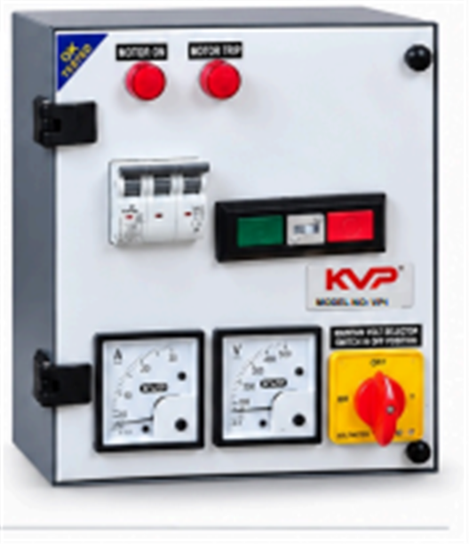

Submersible Panel with DOL/Star-Delta Starter
Robust and reliable motor starting solution for three-phase submersible and industrial pump applications.
Overview
This submersible panel houses either a Direct-On-Line (DOL) or Star-Delta starter configuration behind a heavy-duty enclosure, built for three-phase submersible pump and industrial motor installations from 3 HP to 25 HP. A green MOTOR ON lamp and a red MOTOR TRIP lamp give an instant visual check of motor status, while a built-in MCB protects the panel wiring from short-circuits and excessive current.
A panel-mounted ammeter and voltmeter let you read the motor's running current and incoming supply voltage at a glance, while the maintain-voltage selector switch — complete with an OFF position — makes it easy and safe to isolate the panel for maintenance. Heavy-duty components throughout are chosen for long, dependable service life in the field.
Key Features
- Simple & Reliable DOL/Star-Delta Starting
- Motor ON & TRIP Indication
- MCB / Protection Device for Safer Operation
- Ammeter & Voltmeter for Easy Monitoring
- Maintain-Voltage Selector Switch with OFF Position
- Heavy-Duty Components for Long Service Life
Typical Applications
- Submersible agricultural & borewell pump sets (3–25 HP)
- Industrial motors requiring D.O.L. or star-delta starting
- Pump houses & bulk water-supply installations


Frequently Asked Questions (FAQ's)
English: The green MOTOR ON lamp lights up when the motor is running normally. The red MOTOR TRIP lamp lights up when the overload or protection device has tripped and cut power to the motor — check the motor and connected load for a fault before resetting.
తెలుగు: ఆకుపచ్చ MOTOR ON లైట్ మోటారు సాధారణంగా నడుస్తున్నప్పుడు వెలుగుతుంది. ఓవర్లోడ్ లేదా ప్రొటెక్షన్ డివైస్ ట్రిప్ అయి మోటారుకు కరెంట్ ఆగిపోయినప్పుడు ఎరుపు MOTOR TRIP లైట్ వెలుగుతుంది — మళ్లీ రీసెట్ చేసే ముందు మోటారు మరియు కనెక్ట్ అయిన లోడ్లో ఏదైనా సమస్య ఉందేమో తనిఖీ చేయండి.
English: This rotary switch lets you choose which incoming phase the voltmeter reads, and includes a dedicated OFF position that safely isolates the panel — always turn it to OFF before carrying out any wiring or maintenance work.
తెలుగు: ఈ రోటరీ స్విచ్ వోల్టమీటర్ ఏ ఫేజ్ను చదవాలో ఎంచుకోవడానికి వీలు కల్పిస్తుంది, అలాగే ప్యానెల్ను సురక్షితంగా ఐసొలేట్ చేసే ప్రత్యేక OFF పొజిషన్ను కలిగి ఉంటుంది — ఏదైనా వైరింగ్ లేదా నిర్వహణ పని చేసే ముందు దీన్ని ఎల్లప్పుడూ OFF కు తిప్పండి.
English: The ammeter shows the running current (in Amps) drawn by the motor, and the voltmeter shows the incoming supply voltage (in Volts) on the selected phase — use them together to confirm the motor is correctly loaded and the supply is within a safe range.
తెలుగు: ఆంమీటర్ మోటారు తీసుకుంటున్న రన్నింగ్ కరెంట్ (ఆంప్స్లో) చూపిస్తుంది, వోల్టమీటర్ ఎంచుకున్న ఫేజ్పై వచ్చే సరఫరా వోల్టేజీని (వోల్ట్స్లో) చూపిస్తుంది — మోటారు సరిగ్గా లోడ్ అయిందని మరియు సరఫరా సురక్షిత పరిధిలో ఉందని నిర్ధారించడానికి వీటిని కలిపి ఉపయోగించండి.
English: The MCB (Miniature Circuit Breaker) protects the panel wiring and motor circuit from short-circuits and excessive current, automatically disconnecting the supply the moment a fault is detected.
తెలుగు: MCB (మినియేచర్ సర్క్యూట్ బ్రేకర్) ప్యానెల్ వైరింగ్ మరియు మోటారు సర్క్యూట్ను షార్ట్-సర్క్యూట్లు మరియు అధిక కరెంట్ నుండి కాపాడుతుంది, లోపం కనిపించిన వెంటనే సరఫరాను ఆటోమేటిక్గా డిస్కనెక్ట్ చేస్తుంది.
English: This panel is built for three-phase submersible and industrial motors from 3 HP to 25 HP, fitted with either a D.O.L. or star-delta starter configuration depending on motor size — confirm the exact starter type and HP rating with your KVP dealer at the time of purchase.
తెలుగు: ఈ ప్యానెల్ 3 HP నుండి 25 HP వరకు ఉన్న త్రీ ఫేజ్ సబ్మెర్సిబుల్ మరియు పారిశ్రామిక మోటార్ల కోసం రూపొందించబడింది, మోటారు పరిమాణాన్ని బట్టి D.O.L. లేదా స్టార్-డెల్టా స్టార్టర్ కాన్ఫిగరేషన్తో అమర్చబడుతుంది — కొనుగోలు సమయంలో మీ KVP డీలర్తో ఖచ్చితమైన స్టార్టర్ రకం మరియు HP రేటింగ్ను నిర్ధారించుకోండి.
Need full specs? Download the Motor Starters brochure (PDF).